Visualise sequential distributions using a range of plotting styles.
Usage
fan(
data = NULL,
data.type = "simulations",
style = "fan",
type = "percentile",
probs = if (type == "percentile") seq(0.01, 0.99, 0.01) else c(0.5, 0.8, 0.95),
start = 1,
frequency = 1,
anchor = NULL,
anchor.time = NULL,
fan.col = grDevices::heat.colors,
alpha = if (style == "spaghetti") 0.5 else 1,
n.fan = NULL,
ln = if (length(probs) < 10) probs else probs[round(probs, 2) %in% round(seq(0.1,
0.9, 0.1), 2)],
ln.col = if (style == "spaghetti") "gray" else NULL,
med.ln = if (type == "interval") TRUE else FALSE,
med.col = "orange",
rlab = ln,
rpos = 4,
roffset = 0.1,
rcex = 0.8,
rcol = NULL,
llab = FALSE,
lpos = 2,
loffset = roffset,
lcex = rcex,
lcol = rcol,
upplab = "U",
lowlab = "L",
medlab = if (type == "interval") "M" else NULL,
n.spag = 30,
space = if (style == "boxplot") 1/frequency else 0.9/frequency,
add = FALSE,
ylim = range(data) * 0.8,
...
)Arguments
- data
Set of sequential simulation data, where rows represent simulation number and columns represent some form of time index. If
data.type = "values", data must instead be a set of quantile values by rows for a set of probabilities (which need to be provided inprobs) and by column for some form of time index. Data can take multiple classes, where the contents are converted to amatrix. If the input is amtsorzoo, the time series properties will be inherited (andstartandfrequencyarguments will be ignored).- data.type
Indicates if
dataare sets of pre-calculated values for defined probabilities ("values") or simulated data ("simulations"). Default is"simulations".- style
Plot style, choose from
"fan"(default),"spaghetti","boxplot"or"boxfan".- type
Type of percentiles to plot in
fanorboxfan. Choose from"percentile"(default) or"interval".- probs
Probabilities related to percentiles or prediction intervals to be plotted (dependent on the
typeargument). Must be between 0 and 100 (inclusive) or 0 and 1. Percentiles greater than 50 (or 0.5), if not given, are automatically calculated as 100 -p, to ensure symmetric fan. Defaults to single percentile values whentype = "percentile"and the 50th, 80th and 95th prediction interval whentype = "interval".- start
The time of the first distribution in
sims. Similar to use ints.- frequency
The number of distributions in
simsper unit of time. Similar to use ints.- anchor
Optional data value to anchor a forecast fan on. Typically the last observation of the observed series.
- anchor.time
Optional time value for the anchor. Useful for irregular time series.
- fan.col
Palette of colours used in the
fanorboxfan.- alpha
Factor modifying the opacity alpha; typically in [0,1].
- n.fan
Number of colours to use in the fan.
- ln
Vector of numbers to plot contour lines on top of
fanorboxfan. Must correspond to calculated percentiles inprobs.- ln.col
Line colour imposed on top of the fan. Defaults to darkest colour from
fan.col, unlessstyle = "spaghetti".- med.ln
Logical; add a median line to fan. Useful if
type = "interval".- med.col
Median line colour. Defaults to first colour in
fan.col.- rlab
Vector of labels at the end (right) of corresponding percentiles or prediction intervals.
- rpos
Position of right labels. See
text.- roffset
Offset of right labels. See
text.- rcex
Text size of right labels. See
text.- rcol
Colour of text for right labels. See
text.- llab
Either logical (TRUE/FALSE) to plot labels at the start (left) of percentiles, or a vector of percentiles. Only works for
fanorboxfan.- lpos
Position of left labels. See
text.- loffset
Offset of left labels. Defaults to
roffset.- lcex
Text size of left labels. Defaults to
rcex.- lcol
Colour of text for left labels. Defaults to
rcol.- upplab
Prefix string for upper labels when
type = "interval".- lowlab
Prefix string for lower labels when
type = "interval".- medlab
Character string for median label.
- n.spag
Number of simulations to plot in the
spaghettistyle.- space
Space between boxes in the
boxfanplot.- add
Logical; add to active plot. Defaults to
FALSEforfan,TRUEforfan0.- ylim
Passed to
plotwhenadd = TRUE.- ...
Additional arguments passed to
boxplotforfanand toplotforfan0.
Details
Sequential distribution data can be input as either simulations or pre-computed values over time (columns).
For the latter, declare input data as percentiles by setting data.type = "values".
Users can choose from four styles:
fan,boxfan: shaded distributions with optional contour lines and labels.spaghetti: random draws plotted along the sequence of distributions.boxplot: box plots for simulated data at appropriate locations.
References
Abel, G. J. (2015). fanplot: An R Package for visualising sequential distributions. The R Journal, 7(2), 15–23.
Examples
## Basic Fan: fan0()
##
## 20 or so examples of fan charts and
## spaghetti plots based on the th.mcmc object
##
## Make sure you have zoo, tsbugs, RColorBrewer and
## colorspace packages installed
##
# \dontrun{
demo("sv_fan", "fanplot")
#>
#>
#> demo(sv_fan)
#> ---- ~~~~~~
#>
#> > ##
#> > ## demo file for a variety of fan charts based on the th.mcmc object
#> > ##
#> > library("fanplot")
#>
#> > ##
#> > ##install packages if not already done so (uncomment)
#> > ##
#> > # install.packages("colorspace")
#> > # install.packages("RColorBrewer")
#> > # install.packages("zoo")
#> > # install.packages("tsbugs")
#> >
#> >
#> >
#> > # 1. Defaults.
#> > par(mar=c(2,2,2,1.1))
#>
#> > # empty plot
#> > plot(NULL, xlim = c(1, 965), ylim = range(th.mcmc)*0.85, main="Defaults")
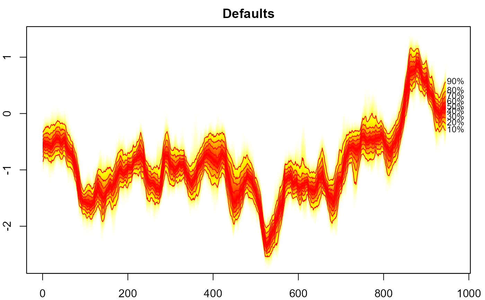
#>
#> > # add fan
#> > fan(th.mcmc)
#>
#> > # 2. Coarser fan.
#> > plot(NULL, xlim = c(1, 965), ylim = range(th.mcmc)*0.85, main="Coarser Palette")
#>
#> > fan(th.mcmc, probs = seq(10, 90, 10))
#>
#> > # 3. Fan with no lines and text.
#> > plot(NULL, xlim = c(1, 965), ylim = range(th.mcmc)*0.85, main="Plain")
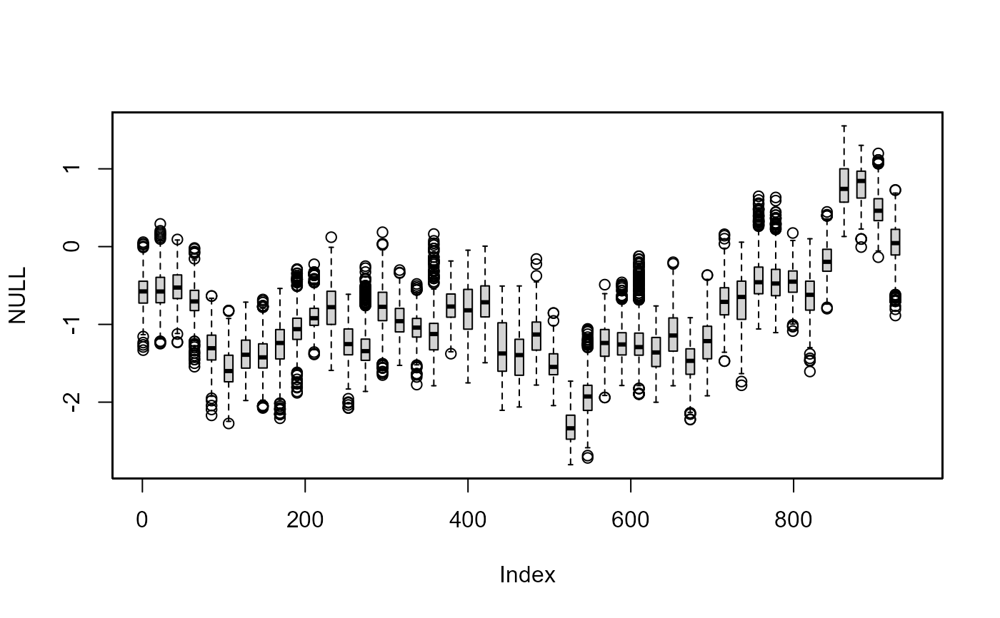
#>
#> > fan(th.mcmc, ln = NULL, rlab = NULL)
#>
#> > # 4. Black lines.
#> > plot(NULL, xlim = c(1, 965), ylim = range(th.mcmc)*0.85, main="Black Contour Lines")
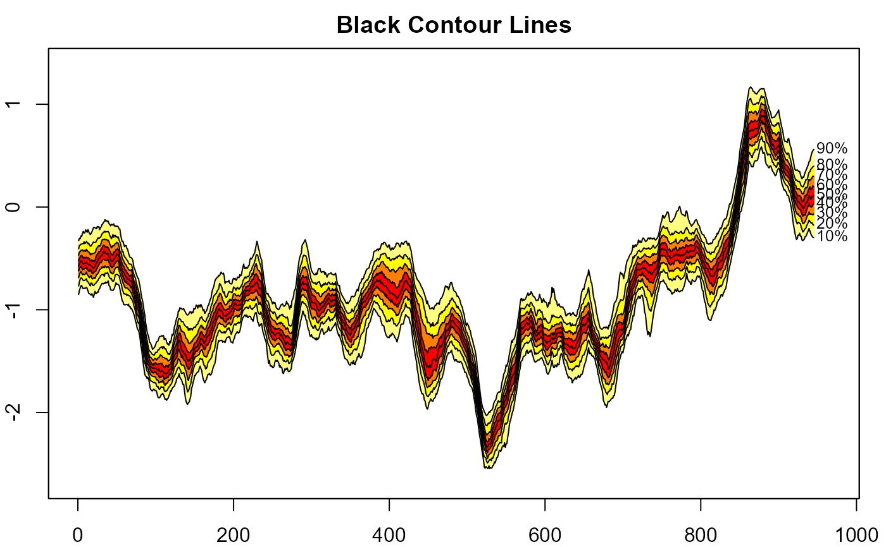
#>
#> > fan(th.mcmc, probs = seq(10, 90, 10), ln.col = "black")
#>
#> > # 5. Transparant fan fill to leave only percentile contor lines.
#> > plot(NULL, xlim = c(1, 965), ylim = range(th.mcmc)*0.85, main="Transparent Fill, Black Lines")
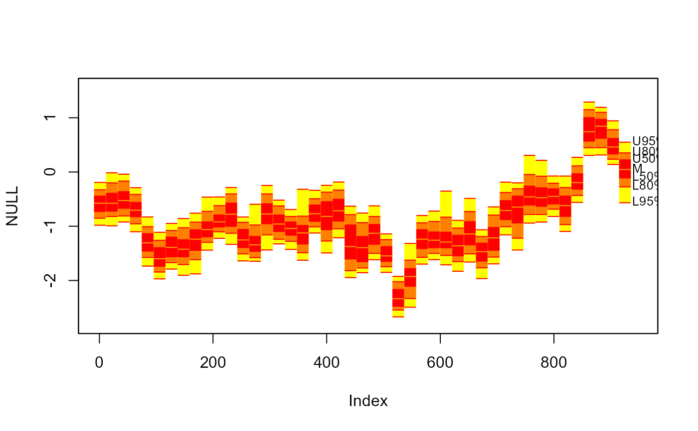
#>
#> > fan(th.mcmc, alpha=0, ln.col="black")
#>
#> > # 6. Prediction interval.
#> > plot(NULL, xlim = c(1, 985), ylim = range(th.mcmc)*0.85, main="Prediction Interval")
#>
#> > fan(th.mcmc, type = "interval")
#>
#> > # 7. Left labels too.
#> > plot(NULL, xlim = c(-40, 985), ylim = range(th.mcmc)*0.85, main="Include Left Labels")
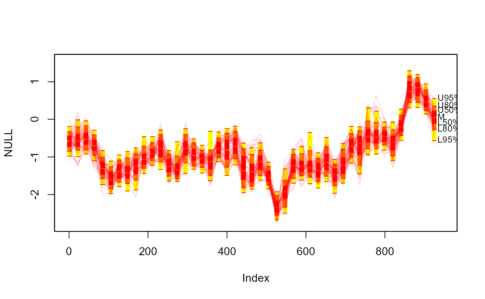
#>
#> > fan(th.mcmc, type = "interval", llab = TRUE)
#>
#> > # 8. Selected right labels.
#> > plot(NULL, xlim = c(-20, 965), ylim = range(th.mcmc)*0.85, main="User Selected Labels")
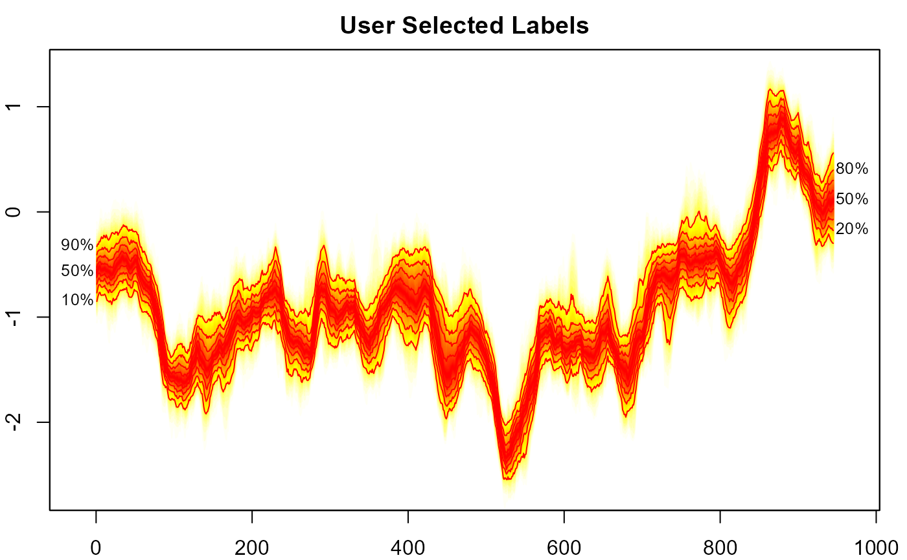
#>
#> > fan(th.mcmc, llab=c(0.1,0.5,0.9), rlab=c(0.2,0.5,0.8))
#>
#> > # 9. Change prefixes of labels.
#> > plot(NULL, xlim = c(-50, 995), ylim = range(th.mcmc)*0.85, main="User Named Labels")
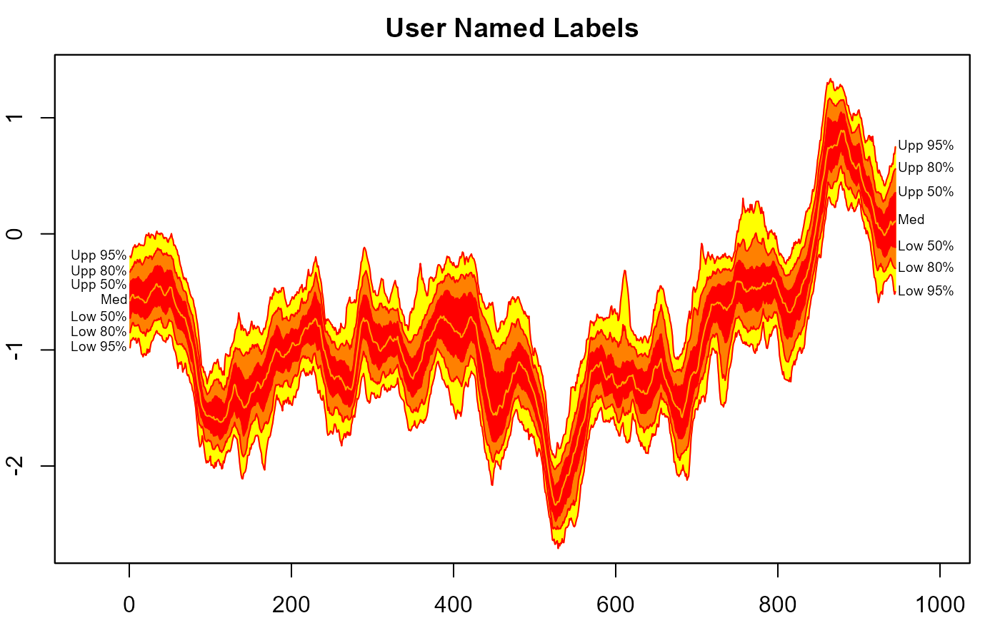
#>
#> > fan(th.mcmc, type = "interval", llab = TRUE, rcex = 0.6,
#> + upplab = "Upp ", lowlab = "Low ", medlab="Med")
#>
#> > # 10. Different colour scheme.
#> > plot(NULL, xlim = c(1, 965), ylim = range(th.mcmc)*0.85, main="User Colour Ramp")
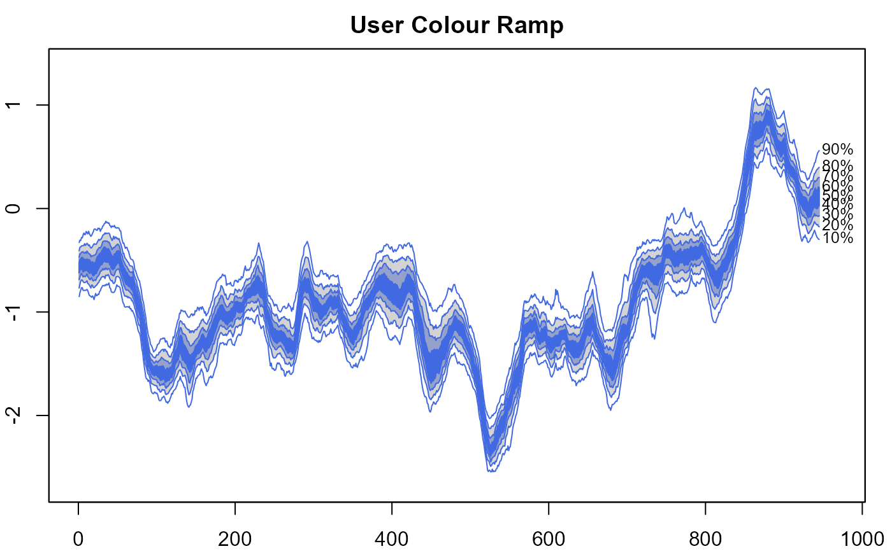
#>
#> > fan(th.mcmc, probs = seq(10, 90, 10),
#> + fan.col = colorRampPalette(c("royalblue", "grey", "white")))
#>
#> > # 11. colorspace colours.
#> > library("colorspace")
#>
#> > plot(NULL, xlim = c(0, 965), ylim = range(th.mcmc)*0.85, main="colorspace Library: diverge_hcl Colour Ramp")
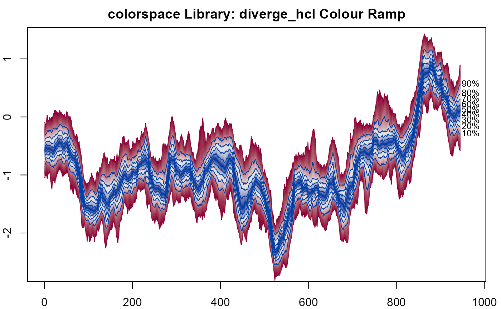
#>
#> > fan(data = th.mcmc, fan.col = diverge_hcl)
#>
#> > # 12. colorspace colours 2.
#> > plot(NULL, xlim = c(0, 965), ylim = range(th.mcmc)*0.85, main="colorspace Library: sequential_hcl Colour Ramp")
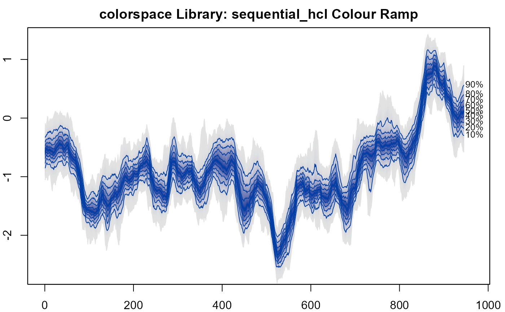
#>
#> > fan(data = th.mcmc, fan.col = sequential_hcl )
#>
#> > # 13. RColorBrewer colours.
#> > library("RColorBrewer")
#>
#> > plot(NULL, xlim = c(0, 965), ylim = range(th.mcmc)*0.85, main="RColorBrewer Library: Accent Colour Ramp")
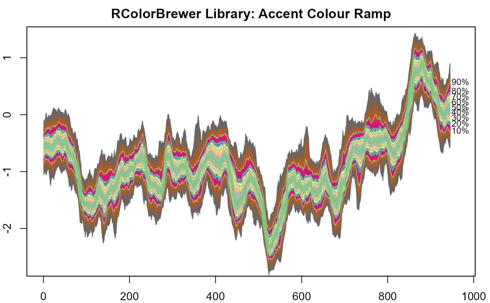
#>
#> > fan(data = th.mcmc,
#> + fan.col = colorRampPalette(colors = brewer.pal(8,"Accent")) )
#>
#> > # 14. RColorBrewer colours 2.
#> > plot(NULL, xlim = c(0, 965), ylim = range(th.mcmc)*0.85, main="RColorBrewer Library: Oranges Colour Ramp")
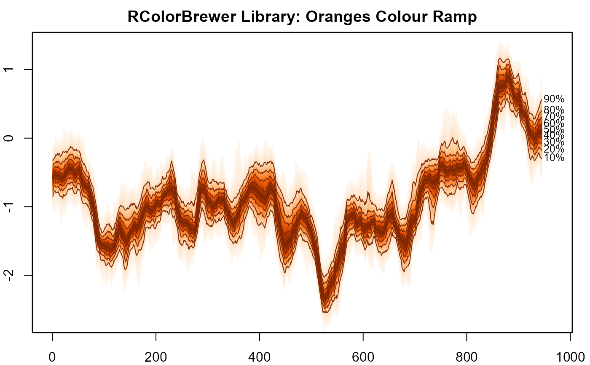
#>
#> > fan(data = th.mcmc,
#> + fan.col = colorRampPalette(colors = rev(brewer.pal(9,"Oranges"))) )
#>
#> > # 15. RColorBrewer colours 3.
#> > plot(NULL, xlim = c(0, 965), ylim = range(th.mcmc)*0.85, main="RColorBrewer Library: Spectral Colour Ramp")
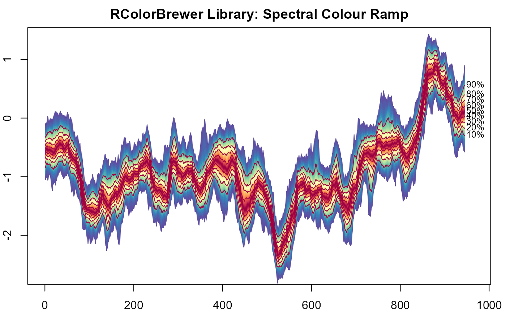
#>
#> > fan(data = th.mcmc,
#> + fan.col = colorRampPalette(colors = brewer.pal(11,"Spectral")) )
#>
#> > # 16. Irregular time series.
#> > library("zoo")
#>
#> Attaching package: 'zoo'
#> The following objects are masked from 'package:base':
#>
#> as.Date, as.Date.numeric
#>
#> > th.mcmc2 <- zoo(th.mcmc, order.by=svpdx$date)
#>
#> > plot(th.mcmc2[,1], type="n", ylim = range(th.mcmc)*0.85, main="X-Axis Based On (Irregular) Dates")
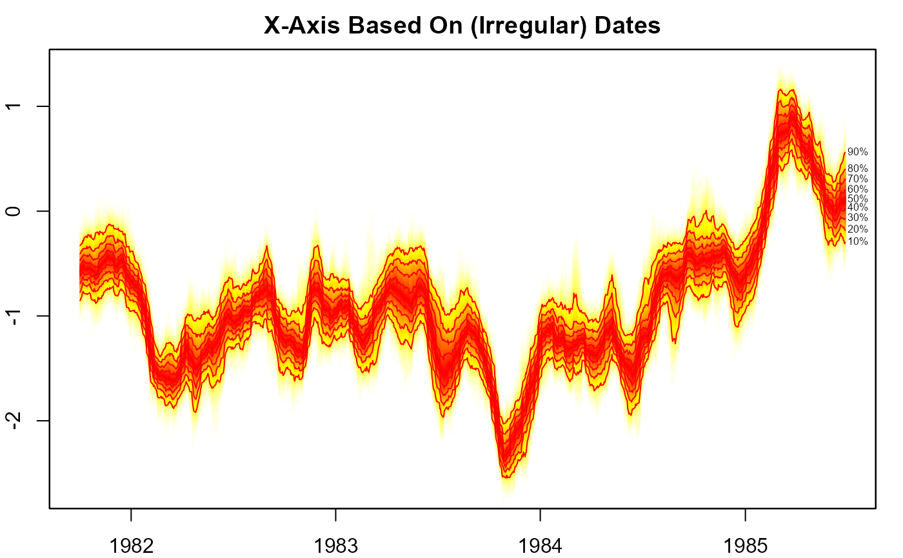
#>
#> > fan(data = th.mcmc2, rcex=0.5)
#>
#> > # 17. Spaghetti plot.
#> > plot(NULL, xlim = c(1, 965), ylim = range(th.mcmc)*0.85, main="Default Spaghetti Plots")
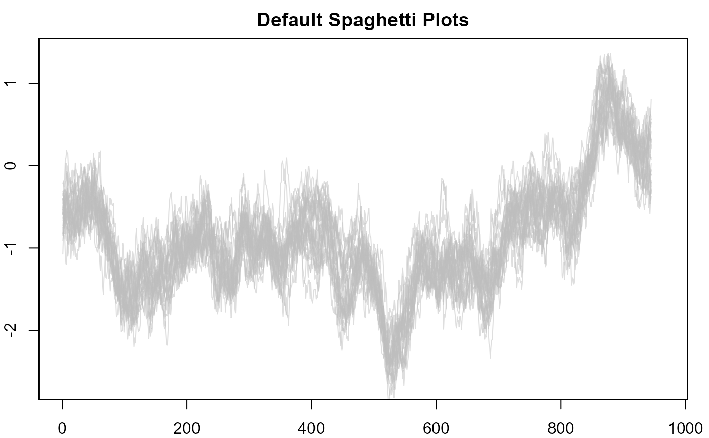
#>
#> > fan(th.mcmc, style = "spaghetti")
#>
#> > # 18. More transparency in lines.
#> > plot(NULL, xlim = c(1, 965), ylim = range(th.mcmc)*0.85, main="Less Transparent Spaghetti Plots")
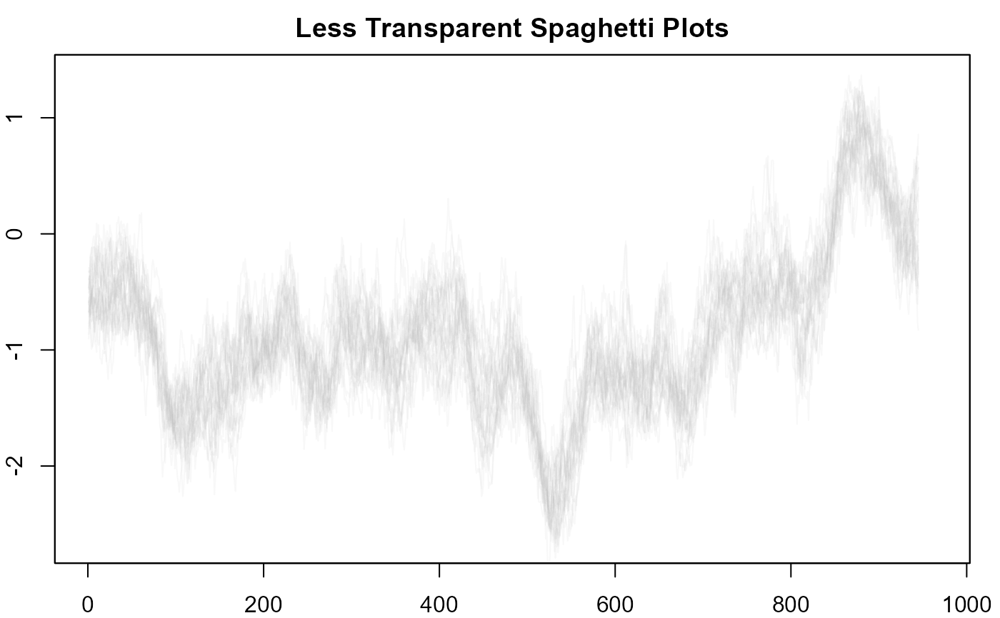
#>
#> > fan(th.mcmc, style = "spaghetti", alpha = 0.1)
#>
#> > # 19. More lines, red.
#> > plot(NULL, xlim = c(1, 965), ylim = range(th.mcmc)*0.85, main="More Lines, Red")
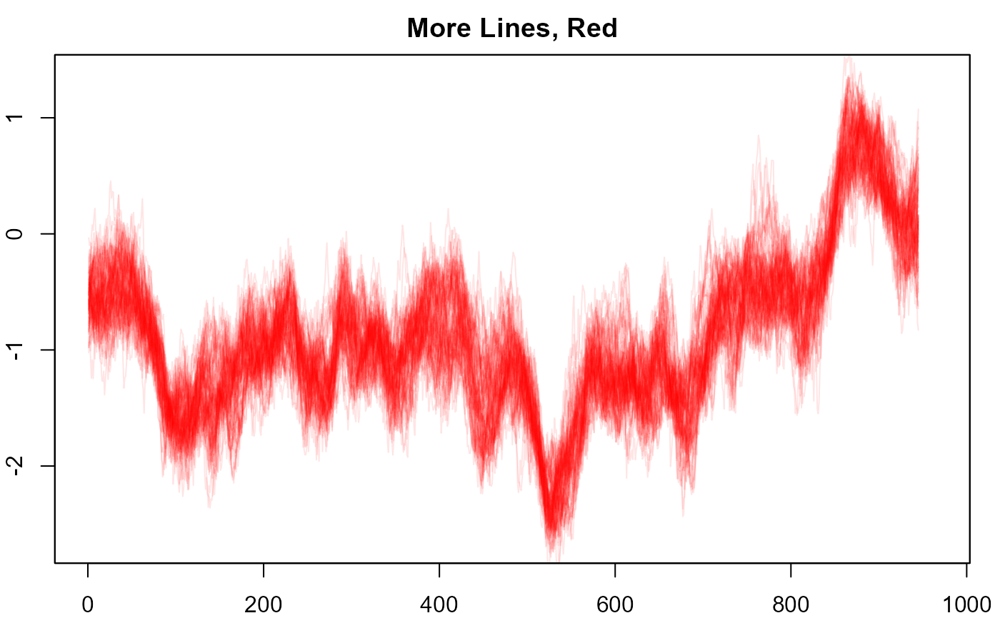
#>
#> > fan(th.mcmc, style = "spaghetti", ln.col = "red", n.spag = 100, alpha = 0.1)
#>
#> > # 20. Overlay spaghetti on transparent fan.
#> > plot(NULL, xlim = c(-20, 965), ylim = range(th.mcmc)*0.85, main="Spaghetti and Fan")
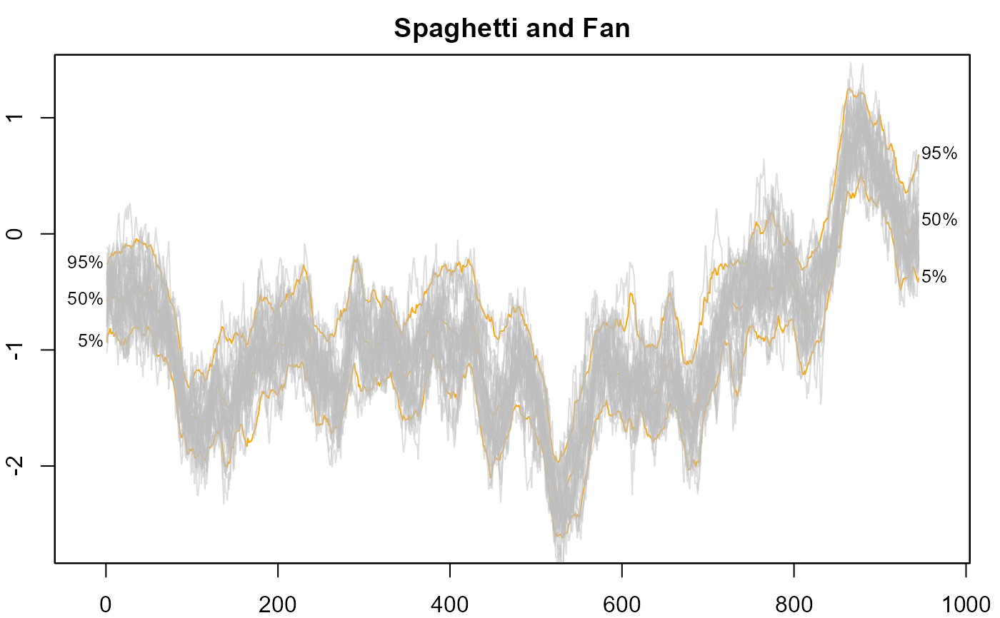
#>
#> > # transparent fan with visible lines
#> > fan(th.mcmc, ln=c(5, 50, 95), llab=TRUE, alpha=0, ln.col="orange" )
#>
#> > # spaghetti lines
#> > fan(th.mcmc, style="spaghetti")
#>
#> > ##
#> > ##save as png
#> > ##
#> > # dev.copy(png, file = "svplots.png", width=10, height=50, units="in", res=400)
#> > # dev.off()
#> >
# }
##
## Fans for forecasted values
##
# \dontrun{
#create time series
net <- ts(ips$net, start=1975)
# fit model
library("forecast")
#> Registered S3 method overwritten by 'quantmod':
#> method from
#> as.zoo.data.frame zoo
m <- auto.arima(net)
# plot in forecast package (limited customisation possible)
plot(forecast(m, h=5))
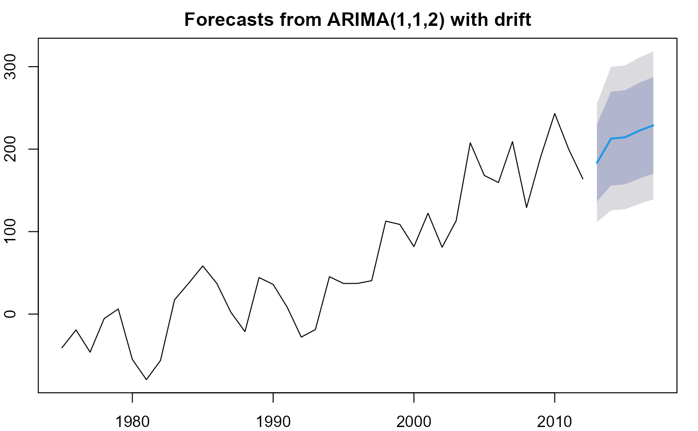
# another plot in forecast (with some customisation, no
# labels or anchoring possible at the moment)
plot(forecast(m, h=5, level=c(50,80,95)),
shadecols=rev(heat.colors(3)))
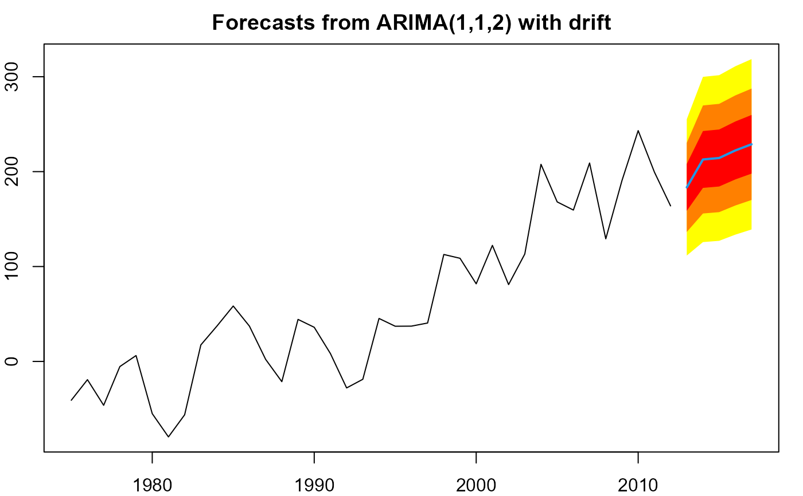
# simulate future values
mm <- matrix(NA, nrow=1000, ncol=5)
for(i in 1:1000)
mm[i,] <- simulate(m, nsim=5)
# interval fan chart
plot(net, xlim=c(1975,2020), ylim=c(-100,300))
fan(mm, type="interval", start=2013)
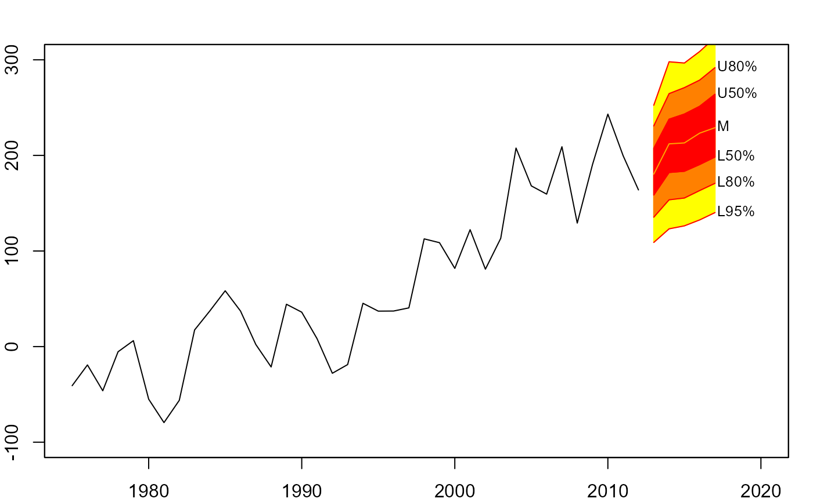
# anchor fan chart
plot(net, xlim=c(1975,2020), ylim=c(-100,300))
fan(mm, type="interval", start=2013,
anchor=net[time(net)==2012])
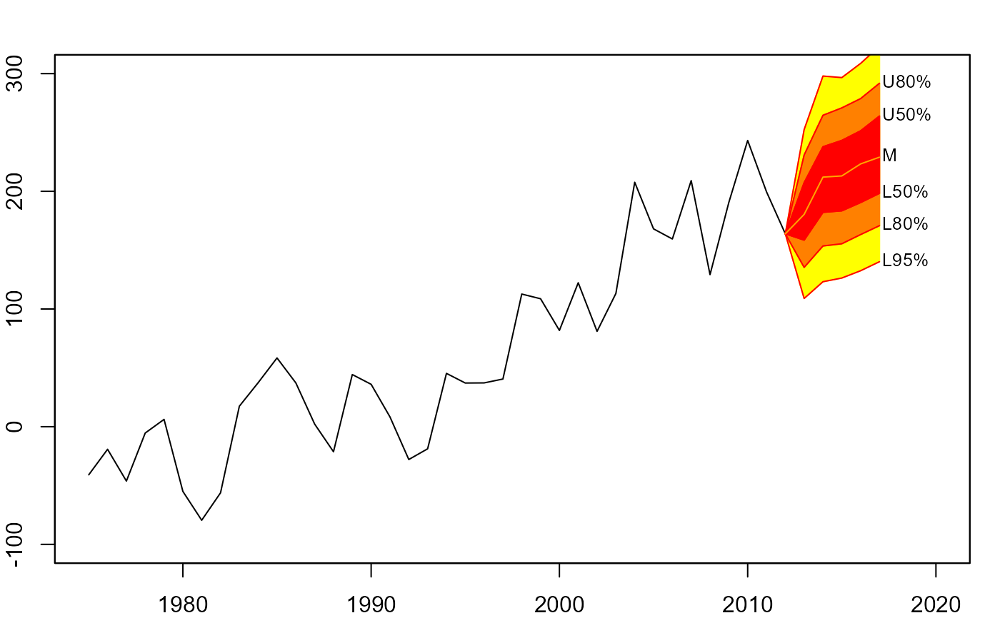
# anchor spaghetti plot with underlying fan chart
plot(net, xlim=c(1975,2020), ylim=c(-100,300))
fan(mm, type="interval", start=2013,
anchor=net[time(net)==2012], alpha=0, ln.col="orange")
fan(mm, type="interval", start=2013,
anchor=net[time(net)==2012], alpha=0.5, style="spaghetti")
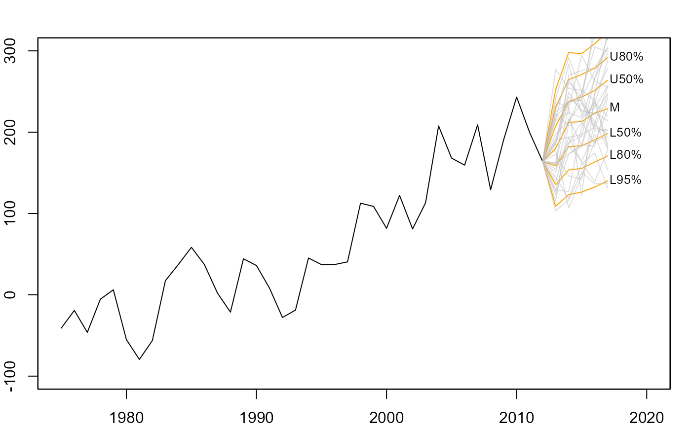
# }
##
## Box Plots
##
# sample every 21st day of theta_t
th.mcmc21 <- th.mcmc[, seq(1, 945, 21)]
plot(NULL, xlim = c(1, 945), ylim = range(th.mcmc21))
fan(th.mcmc21, style = "boxplot", frequency = 1/21)
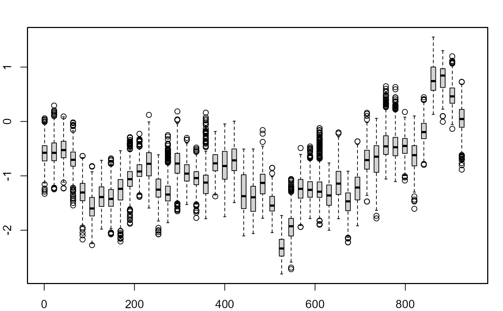
# additional arguments for boxplot
plot(NULL, xlim = c(1, 945), ylim = range(th.mcmc21))
fan(th.mcmc21, style = "boxplot", frequency = 1/21,
outline = FALSE, col = "red", notch = TRUE)
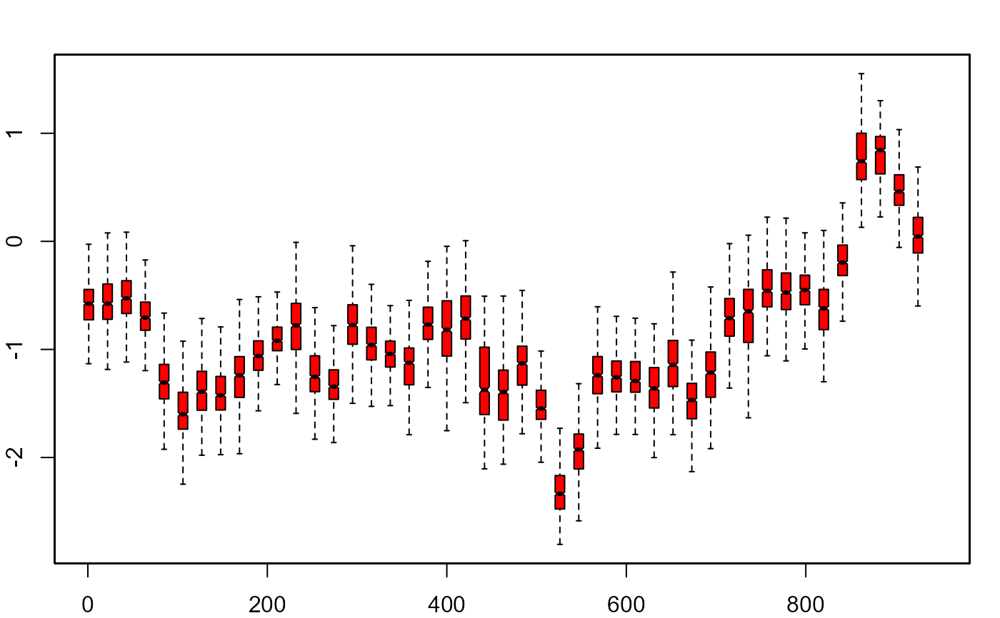
##
## Fan Boxes
##
plot(NULL, xlim = c(1, 945), ylim = range(th.mcmc21))
fan(th.mcmc21, style = "boxfan", type = "interval", frequency = 1/21)
# more space between boxes
plot(NULL, xlim = c(1, 945), ylim = range(th.mcmc21))
fan(th.mcmc21, style = "boxfan", type = "interval",
frequency = 1/21, space = 10)
# overlay spaghetti
fan(th.mcmc21, style = "spaghetti",
frequency = 1/21, n.spag = 50, ln.col = "red", alpha=0.2)
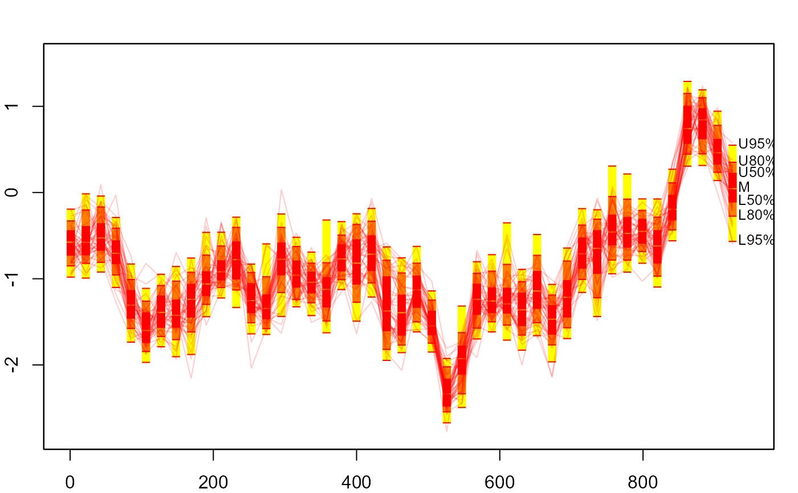